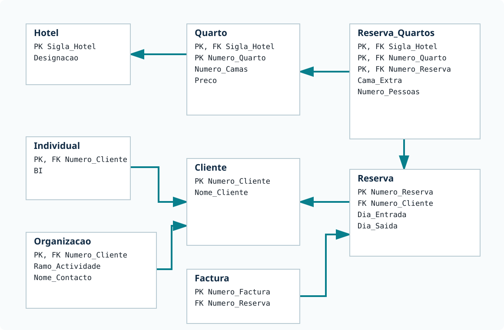

O ponto de partida
A base de dados relacional Hotel
No modelo relacional, a informação encontra-se distribuída por oito tabelas. As chaves estrangeiras permitem reconstruir hotéis, quartos, clientes, reservas e faturas.

Uma única coleção
A coleção hotel
A solução documental usa apenas uma coleção, mas aceita documentos de dois tipos. Os documentos com tipo: "hotel" contêm quartos e reservas. Cada reserva contém o cliente, os quartos usados e as faturas. Além disso, todos os clientes são documentos autónomos com tipo: "cliente": não são apenas NASA e Continente, nem apenas os clientes sem reservas.
Assim, Ana, ISCTE, Pedro, ONU e todos os restantes clientes têm o seu próprio documento. Quando um cliente faz uma reserva, parte dos seus dados também fica embebida nessa reserva. O documento autónomo representa o cliente enquanto entidade; a cópia embebida permite consultar a reserva sem procurar o cliente noutro documento.
Documento de hotel
{
_id: "hotel:RM",
tipo: "hotel",
sigla: "RM",
designacao: "Roma",
quartos: [
{ numero: 1, camas: 2, preco: 10 },
{ numero: 2, camas: 3, preco: 25 }
],
reservas: [
{
numero: 12,
entrada: ISODate("2012-08-13"),
saida: ISODate("2012-08-14"),
cliente: {
numero: 4,
nome: "ONU",
organizacao: {
ramo: "Internacional",
contacto: "Evaristo"
}
},
quartos: [
{ numero: 1, pessoas: 1, camaExtra: null }
],
facturas: [
{ numero: 7, data: ISODate("2012-11-18"), valor: 400 }
]
}
]
}Documento de cliente
{
_id: "cliente:4",
tipo: "cliente",
numero: 4,
nome: "ONU",
organizacao: {
ramo: "Internacional",
contacto: "Evaristo"
},
reservas: [
{ numero: 1, hotel: "SH" },
{ numero: 2, hotel: "AL" },
{ numero: 6, hotel: "AL" },
{ numero: 10, hotel: "LS" }
]
}Um cliente com reservas aparece de duas formas: uma vez como documento autónomo e novamente, de forma embebida, em cada reserva que efetuou. Um cliente sem reservas aparece apenas como documento autónomo. Esta duplicação simplifica consultas, mas a aplicação tem de manter as cópias coerentes quando os dados mudam.
Praticar
19 exercícios MongoDB
O resultado esperado é o mesmo dos exercícios SQL. As duas primeiras resoluções estão abertas. Da terceira em diante, use a senha indicada pelo docente.